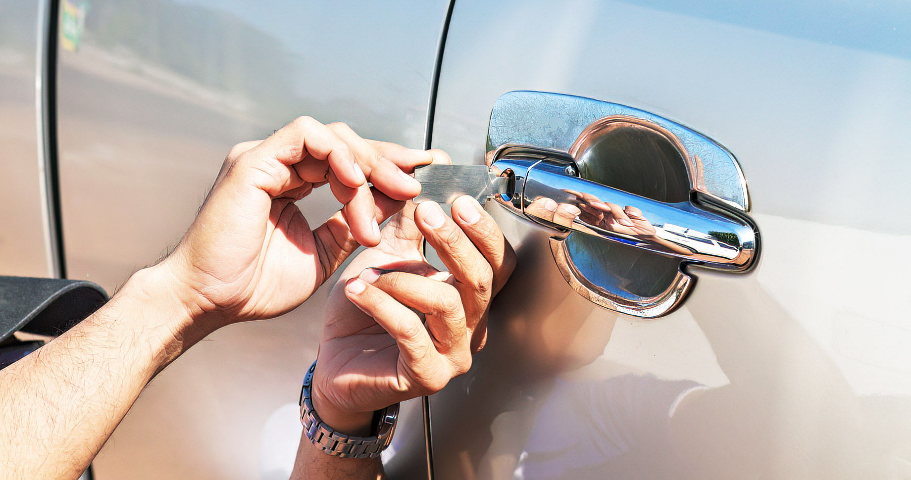
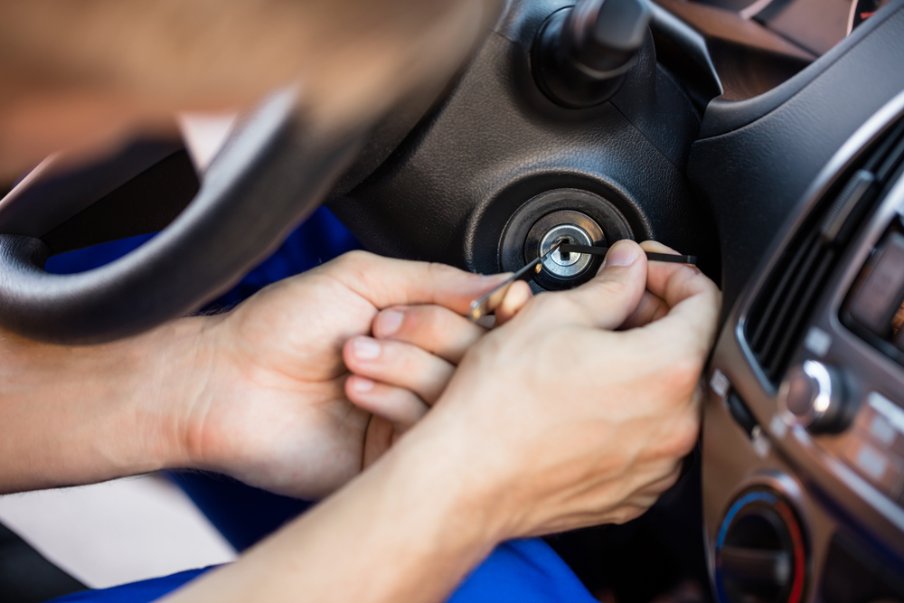
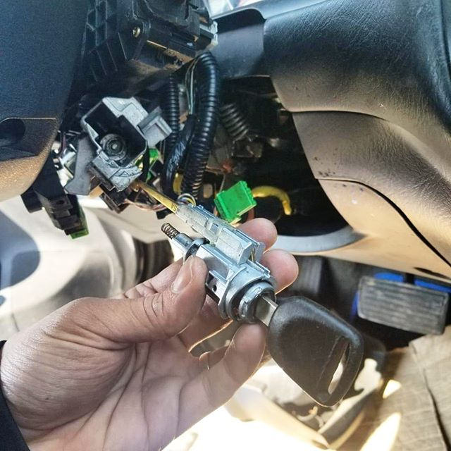
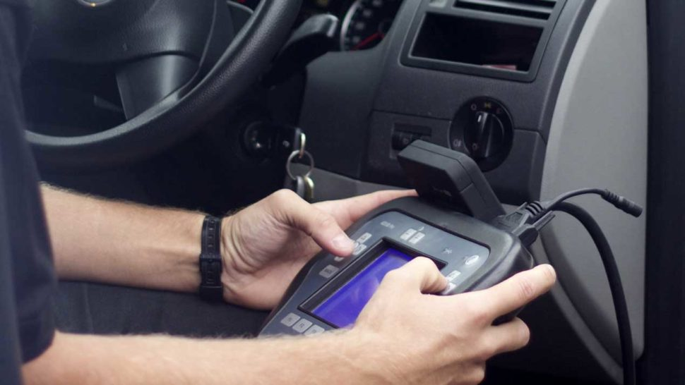

24/7 Mobile Auto Locksmith Across North West England
Car Key Replacement, Programming, ECU Services and Emergency Unlocking
📞 Call RTi Auto Locksmith now: +44 7850 671304
RTi Auto Locksmith provides professional mobile auto locksmith support across Liverpool, Manchester, Preston, Wigan, Bolton, Blackburn and surrounding North West areas.
We assist with car keys, van keys, selected motorcycle keys, ignition repair, emergency vehicle unlocking, ECU remap, ECU cloning and mileage correction support.
Looking for an auto locksmith near me, car key replacement near me or mobile auto locksmith near me? We provide fast mobile support across the North West.
Professional Auto Locksmith Services Across North West England
RTi Auto Locksmith provides mobile auto locksmith services across North West England, including Liverpool, Manchester, Preston, Wigan, Bolton, Blackburn, Chorley, Southport, St Helens and nearby areas.
We help private drivers, business owners and van operators with practical support for lost car keys, damaged keys, spare keys, ignition issues, emergency vehicle entry and selected vehicle electronic services.
- Car Key Replacement – lost, damaged or stolen car keys replaced for many makes and models.
- Spare Car Keys – additional keys cut and programmed to help avoid future emergencies.
- Car Key Programming – transponder keys, remote keys and selected smart key programming.
- Emergency Vehicle Unlocking – fast entry support if keys are locked inside your vehicle.
- Ignition Repair – support for stuck keys, worn barrels and ignition lock faults.
- Van Key Replacement – selected replacement van keys, spare van keys and van key programming support.
- Motorcycle Key Assistance – selected motorcycle key support depending on make and model.
- ECU and Vehicle Electronic Support – selected ECU repair, remap, cloning and module-related support.
- Mileage Correction – selected mileage correction and dashboard calibration support where appropriate.
About RTi Auto Locksmith
RTi Auto Locksmith provides fast, reliable and professional mobile auto locksmith services for drivers across the North West. We support customers with lost car keys, spare keys, key programming, emergency lockouts, ignition problems and selected vehicle electronic solutions.
Whether you are a private driver, business owner or van operator, we understand how disruptive key and lock problems can be. Our goal is to provide practical mobile help that gets you back on the road quickly and safely.
We also work with selected postal jobs for locks, ignition units and modules where customers need a repair, matching or programming-related service without visiting in person.
Mail-in Lock and Module Service
You can send your lock, ignition unit or selected module to us by post for repair, programming, matching or related diagnostic support.
Once the work is completed, the unit can be returned safely back to you. Please contact us before sending any parts so we can confirm what to include, how to package the item and where to send it.
This service may be useful for customers outside the immediate mobile coverage area or for lock and module work that can be completed off-site.
Emergency Vehicle Unlocking

Locked your keys inside the car? Lost access to your vehicle? RTi Auto Locksmith provides emergency vehicle unlocking support across the North West.
We understand how stressful it is to be locked out at home, at work, on the roadside or during bad weather. Our aim is to regain entry carefully and professionally without unnecessary damage.
If possible, contact us with your location, vehicle make, model and situation so we can advise on availability and likely next steps.
Car Key Replacement and Spare Keys

We provide car key replacement for many makes and models across North West England. Whether your key has been lost, stolen, snapped, stopped working or damaged by wear, RTi Auto Locksmith may be able to help.
Depending on the vehicle, replacement key work may include opening the vehicle, cutting a new blade, programming the transponder chip, pairing remote functions and testing the final key correctly.
If you still have one working key, we can also help with spare car key solutions. A spare key is often the easiest way to avoid a more expensive lost-key emergency later.
Why Choose RTi Auto Locksmith
Drivers across the North West choose RTi Auto Locksmith for responsive mobile service, practical experience and support with a wide range of key, lock and vehicle electronic issues.
- Mobile auto locksmith coverage across the North West
- Car key replacement and spare key solutions
- Car key programming and transponder coding
- Emergency vehicle unlocking
- Ignition lock support
- Selected van and motorcycle key assistance
- ECU remap, repair and cloning support
- Mileage correction and dashboard calibration support
Ignition Repair

If your key is stuck, hard to turn or the ignition barrel is damaged, we can diagnose and support many ignition lock problems.
Common warning signs include a key that feels loose, a barrel that jams, difficulty turning to position, or a key that becomes harder to remove.
Early attention to ignition faults can help prevent a full breakdown situation and avoid additional damage to keys, barrels or surrounding components.
Car Key Programming

We provide key and remote programming for a wide range of vehicles, including replacement keys, spare keys and selected module-related services.
Modern vehicles often require specialist programming for transponder keys, remote keys and selected smart key systems before the car will recognise and start with the new key.
If you already have a replacement key or fob, we may also be able to assist with coding and testing depending on the vehicle system.
Van Key Replacement
RTi Auto Locksmith also provides selected van key replacement and spare van key support for customers who rely on their vehicles for work, deliveries and day-to-day business use.
If you have lost your van key, damaged the only working key or need a spare key for staff or backup purposes, contact us with your van make, model, year and registration.
Many van keys require both cutting and programming, so it helps if you can provide full details before we confirm availability.
Motorcycle Key Assistance
We also provide selected motorcycle key assistance depending on the make, model, year and key system. If you have lost your bike key, damaged your only key or need help with a spare key, contact us first with full details so we can confirm whether support is available.
Motorcycle key systems vary a lot, so availability is confirmed case by case.
ECU Repair, Remap and Cloning
RTi Auto Locksmith may also assist with selected ECU repair, ECU remap, ECU cloning and module-related services depending on vehicle make, model and system type.
These services may be useful where vehicles have immobiliser faults, damaged modules, communication problems or replacement units that need matching correctly.
Contact us with your vehicle details and a description of the issue so we can confirm whether support is available for your system.
Mileage Correction and Dashboard Calibration
We may also provide support for mileage correction and dashboard calibration where appropriate and legally permitted. This may be relevant after instrument cluster, ECU or module replacement.
Availability depends on the vehicle make, model, dashboard system and the reason the calibration is required.
Contact us with your vehicle details and we will confirm whether assistance is available.
Pricing
Prices vary depending on vehicle make, model, year, key type and the service required. Contact RTi Auto Locksmith for a quote and include your vehicle registration or full details where possible.
Giving accurate information at the start helps us provide a more useful estimate and confirm whether the service is suitable for your vehicle.
Training
We also provide auto locksmith training and practical guidance based on real industry experience. Contact us to learn more about current training options, coverage and skill areas.
Training enquiries are handled individually, so please send a message with your current experience, the areas you want to learn and whether you are interested in beginner or advanced support.
Auto Locksmith Locations Across North West England
RTi Auto Locksmith provides mobile auto locksmith services across many towns and cities in North West England. If you are searching online for an auto locksmith near me, car key replacement near me or mobile auto locksmith near me, our mobile service may be able to assist depending on location and availability.
We regularly support drivers with lost car keys, spare key programming, vehicle unlocking and ignition problems across Liverpool, Manchester, Preston, Wigan, Bolton, Blackburn, Chorley, Southport, St Helens, Blackpool and surrounding towns.
Our mobile auto locksmith service may also assist in nearby locations across the wider North West region. If you are unsure whether we cover your location, contact us with your postcode and vehicle details and we will confirm availability.
Major Auto Locksmith Locations
- Liverpool Auto Locksmith
- Manchester Auto Locksmith
- Preston Auto Locksmith
- Wigan Auto Locksmith
- Bolton Auto Locksmith
- Blackburn Auto Locksmith
- Chorley Auto Locksmith
- St Helens Auto Locksmith
- Southport Auto Locksmith
- Blackpool Auto Locksmith
- Warrington Auto Locksmith
- Burnley Auto Locksmith
- Bury Auto Locksmith
- Rochdale Auto Locksmith
- Oldham Auto Locksmith
- Stockport Auto Locksmith
Need a mobile auto locksmith near you? Call RTi Auto Locksmith now: +44 7850 671304
View all areas: Auto Locksmith Locations
Frequently Asked Questions
Do you provide mobile auto locksmith services across the North West?
Yes, RTi Auto Locksmith provides mobile auto locksmith support across Liverpool, Manchester, Preston, Wigan, Bolton and many surrounding areas in North West England.
Can you replace lost car keys?
Yes, we may be able to replace lost car keys for many makes and models depending on the vehicle system, year and key type.
Do you provide spare car keys?
Yes, if you still have one working key, we may be able to cut and program a spare key.
Do you program remote and transponder keys?
Yes, we provide programming support for many remote and transponder key systems, depending on the vehicle.
Can you help if the key is stuck in the ignition?
Yes, we may be able to assist with stuck keys, worn ignition barrels and common ignition lock issues.
Do you unlock vehicles if keys are locked inside?
Yes, RTi Auto Locksmith provides emergency vehicle unlocking support across the region.
Do you provide van key replacement?
Yes, we may assist with selected van key replacement, spare van keys and programming support.
Do you offer ECU and mileage-related services?
We may provide selected ECU services and selected mileage correction or dashboard calibration support where appropriate.
What details should I send when asking for help?
Please provide your vehicle make, model, year, registration, postcode and a short explanation of the issue so we can advise you more accurately.
Contact Us
UK Contact
Tel.: +44 7850 671304
Email: rtiautolocksmith@gmail.com
Region: North West England
Services: Car keys, van keys, ignition repair, ECU support, mileage correction